Handheld Hydrophone User Manual
The following information is for the use of NOAA Fisheries Southwest Acoustic Ecology Lab. The checklists and steps are specific to their usage and may not apply to all required purposes of the Handheld Hydrophone. Please reference device websites and manuals found in the Resources section below for more information for applying this device to your specific project and goals. See this video for a simple overview of recording with the Handheld Hydrophone.
Equipment List
| Home | Equipment | Notes |
|---|---|---|
| Hydrophone case | Hydrophone Cable | |
| Hydrophone case | Pre Amplifier | |
| Hydrophone case | Manuals & other paperwork | Manuals & Help Center in resources section |
| Handy Recorder Plastic Bag | Handy Recorder Device | |
| Handy Recorder Plastic Bag | Handy Recorder manuals & other paperwork | Manuals & Help Center in resources section |
| Handy Recorder Plastic Bag | Handy Recorder USB 2.0 (USB Mini B) adapter | Used for direct connection to computer |
| Handy Recorder Plastic Bag | Handy Recorder AC power adapter | Not necessary if using batteries |
| Handy Audio Interface Box | Audio Interface | |
| Handy Audio Interface Box | Bus power cable | Used for direct connection to computer |
| Handy Audio Interface Box | USB power cable | Not needed if using batteries or bus power cable |
| Handy Audio Interface Box | USB Wall Charger | Not needed unless using USB power cable |
| Loose in box | Headphones | |
| Speaker Box | Speaker | |
| Speaker Box | USB-C charger | Need USB wall charger |
| Additional parts bag | Spare AA batteries | Used for both Recorder & Audio Interface |
| Additional parts bag | Spare SD card | |
| Laptop Case | Laptop |
Pre-Fieldwork
Complete all following checklists and steps prior to taking and using the Handheld Hydrophone in the field.
Pre-Fieldwork Checklist
| Related Device | Task | Comments |
|---|---|---|
| All | Ensure all necessary components from equipment list are in clear box | |
| Hydrophone | Hydrophone safe in case and secure for travel | |
| Hydrophone | Test hydrophone with Handy Recorder | Additional steps here |
| Handy Recorder | Check batteries in recorder | Bring additional batteries |
| Handy Recorder | Change settings as needed | Additional steps here |
| Handy Recorder | Check for SD card and make sure it has space | Additional steps here Bring additional SD cards |
| Audio Interface | Check batteries in audio interface | Bring additional batteries |
| Speaker | Check battery level on speaker and charge if needed | |
| All | Do a full system test run | Additional Steps here |
Testing the Hydrophone with Handy Recorder
**Take extra precaution when working with the hydrophone sensor end. Do not put excess pressure on or crush the hydrophone**
Remove hydrophone, preamplifier, and Handy Recorder from box
Connect the hydrophone to the preamplifier by plugging the yellow labeled end of the hydrophone to the preamplifier box and twist the hydrophone cable to lock them together 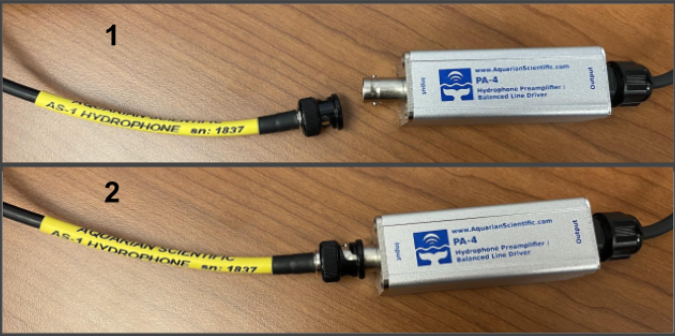
Connect the other end of the preamplifier to the Handy Recorder, align three pins from preamplifier to the channel 1 recorder port, and click into place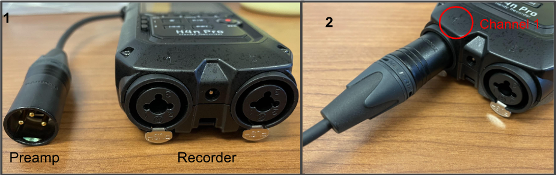
Turn on Handy Recorder using power button on the left side, and ensure the four channel (4CH) recording option is selected at the top (see help steps below in Recording Only With One Hydrophone (Single-Channel Recording)
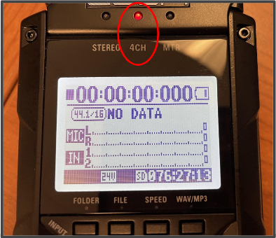
Press the record button once and lightly tap on each of the two attached microphones on top of the recorder, as well as the hydrophone
Check for signal changes on the recorder screen
- Each of the three recording bars (MIC L & R, IN 1) should be moving and the record button should be blinking red
- If there is no signal change for the hydrophone, follow steps in Recorder Not Displaying Signal Change From Hydrophone section
- If testing hydrophone in water, ensure only the end of the hydrophone is in the water, and no other components, including the preamplifier and recorder, get wet
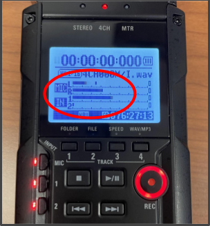
Once both microphones and the hydrophone has been tested, press the stop button and turn off the recorder
Carefully remove the preamplifier/hydrophone cable from the recorder (press metal tab on back of recorder port while pulling the cable)
Untwist the hydrophone, pull cable from preamplifier, and return all components to hydrophone and recorder cases
Setting Up and Changing Settings for Handy Recorder
Loading an SD Card
An SD card is required to record and save on the Handy Recorder
- Make sure recorder power is off
- Insert SD card into slot on right side of the recorder
Cautions
- SD card must be 16MB to 32GB
- If “Format Card” appears on the display startup, the SD card must be formatted for the device. Press DIAL and select YES to format the SD card for the H4n Pro
- Clear SD card before recording to ensure there is ample space
Single-Channel Recording
Recorder should be set up to record on 4 channels (two attached microphones and two channel ports on the bottom of the recorder where the hydrophone is plugged in). This is useful in the event you want to narrate what is happening at the surface while the hydrophone is recording (i.e. whales breaching at this time). Follow these steps to change to single channel recording, to only record with the hydrophone, not the attached microphones. (Follow steps and picture below)
Click menu button on right side of Handy Recorder
Use scroll wheel to go to Mode option and press scroll button in to select Mode
Use scroll button to move to Stereo (single channel) and push scroll button in to select it
Recorder screen should return to main screen and STEREO light indicator should be on
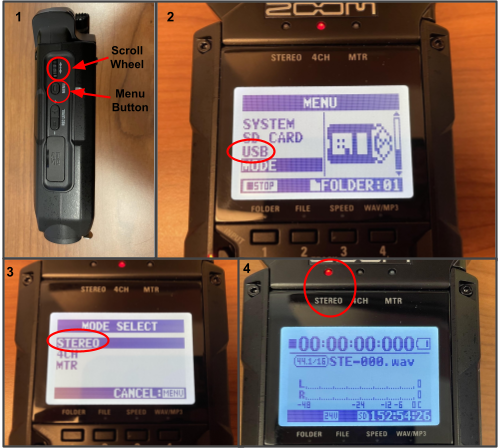
Press the 1 button on bottom left of recorder, and channel 1 & 2 light indicators should turn on (may be on already)
- Ensure mic button is not lit up
Recorder is now ready to record with only the hydrophone on channel 1
Setting the Date and Time
The date/time should be correctly set. If it is not, complete these steps to check the date/time and correct it.
- Press Menu button on left side of the recorder
- Use scroll wheel on left side of recorder to navigate to SYSTEM, press scroll wheel in to select
- Select DATE/TIME and press scroll wheel
- Use the scroll wheel to set the year, month, day, and time
- Select OK and press scroll wheel
Using Stamina Mode
If you are anticipating that battery levels will be a concern while in the field, you can switch to stamina mode to conserve power.
- On the back of the recorder, open the battery compartment and switch to stamina mode on
This will lengthen the battery life to roughly 11 hours depending on usage. When using this mode, the recorder can only record/playback in WAV 44.1kHz/16-bit and MP43 formats. This may limit some recorder function, see manual for more information.
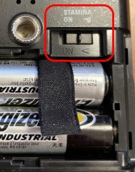
Changing the Folder Location
You can manually select which folder you would like the recorder to save files to. It will default to Folder 1 (1 out of 10), and will save a new file for each recording. To change the file, follow these steps;
- Press the menu button on right side of the recorder
- Use scroll wheel to select folder
- Choose which folder you want to store your recordings in and push down on the scroll wheel to select
When you are done recording, you can move the files out of one of the preset folders, into your own folder with a more descriptive naming format.
How to Use Handheld Hydrophone in the field
Device Set-Up
Take extra precaution when working with these electrical components around water. Do not put excess pressure on or crush the hydrophone receiver end. Do not get any piece of the device wet, other than the hydrophone cable
- Remove all necessary components and place on a clean, dry surface
- Connect the hydrophone to the preamplifier by plugging them together and twisting the hydrophone wire to lock them together
- Connect the other end of the preamplifier to the Handy Recorder, align three pins from preamplifier to the channel 1 recorder port, and click into place
- Connect the Recorder to the Laptop
- Connect the bluetooth speaker to the computer
- Power on all devices including recorder, audio interface, computer, and speaker
- Test recorder using steps found in Testing the Hydrophone with Handy Recorder
Recording with the Handheld Hydrophone (no playback)
- Ensure all components of the Handheld Hydrophone are secure and in a dry place
- Drop hydrophone receiver end into the water
- Ensure no components other than the hydrophone get wet
- Press record button, look for signal changes on screen
- Press record button again to start recording
- After sampling, press stop button to stop recording
Using the Handy Recorder as an Audio Interface (real-time playback)
Connect hydrophone and pre-amplifier to the Handy Recorder channel 1
Connect Handy Recorder to computer through the USB cable
Handy Recorder should automatically turn on
Use scroll wheel to choose audio interface option (AUDIO I/F
Use the scroll wheel to change the Frequency to 48kHz
Use the scroll wheel to select connect and the recorder will establish connection to the computer, once connected you should see audio signals changing on the recorder screen
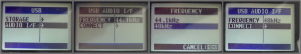
Click on channel 1 to ensure the hydrophone is the chosen audio input
Open up your sound settings on your computer and find the output and input options
Ensure output is set to correct speaker (Bluetooth Sony speaker)
Ensure input is set to Zoom Recording Mixer (Zoom H and F series Audio)
Open the Sound Control Panel on your computer
Click on the recording tab and open up the properties for the Zoom Recording Mixer
Select the box to listen to this device, and press OK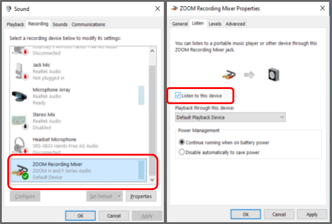
Audio from the hydrophone should start playing out of your chosen speaker
Drop the hydrophone receiver end into the water, ensure all other components of the array do not get wet
Post-Fieldwork Checklist
Complete the following steps to ensure the Handheld Hydrophone is properly cleaned and stored for next usage.
| Related Device | Task | Comments |
|---|---|---|
| Hydrophone | Freshwater rinse and dry hydrophone cable | Ensure no parts, other than hydrophone cable, get wet |
| Hydrophone | Store hydrophone securely for travel | Take note to secure hydrophone receiver end |
| All | Turn off and return all other components to main box | Ensure no saltwater or residue is left on any parts |
Additional Information
Useful place for FAQs, common issues, etc.
Accessing Recorder Files
There are three methods for accessing the files the Handy Recorder has saved; playback on the recorder, plug recorder into computer to access files, or remove SD card and plug it into a computer to access the files
Recorder Connected to Computer
Connect Handy Recorder to computer through the USB cable
Handy Recorder should automatically turn on
Use scroll wheel to choose storage option
Connection will be established between the recorder and the computer, and a new windows explorer window will appear with the files that have been recorded to the SD card on it
Navigate to the desired folder and .wav files of your recordings will appear
SD Card
Remove the SD card from the Handy Recorder
Plug SD card into the computer and the windows explorer window will appear
Navigate to the desired folder and .wav files of your recordings will appear
Recorder Not Displaying Signal Change From Hydrophone
Complete the following steps if there is no change in signal being displayed on the recorder.
Click on menu button on right side of the recorder and use the scroll wheel to navigate and select INPUT from the menu
Use the scroll wheel to select PHANTOM
Change the phantom power to +48V if not there already
Retest hydrophone and look for changes in signals
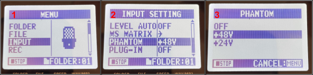
Resources
Zoom H4n Pro Handy Recorder
Operation Manual
Quick Guide
Help Center
Names & Function of Parts
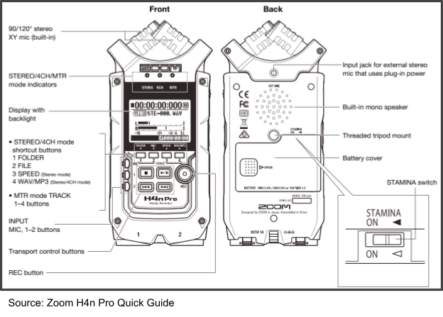
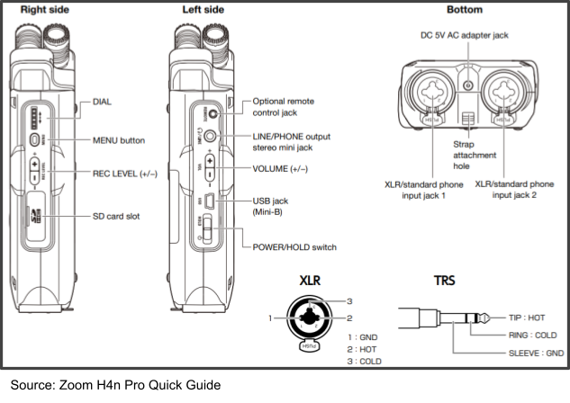